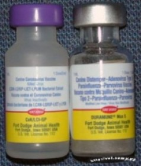
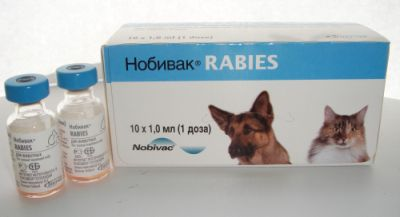

Вы принесли в дом полуторамесячного малыша кеесхонда. В течение своего короткого промежутка жизни он питался молоком матери и не покидал квартиру. В инфекционном отношении он, как правило, здоров. В эмбриональный период развития плода через плаценту и после рождения, с молозивом матери, щенок получил необходимые антитела, и у него возник материнский иммунитет, который будет оказывать надежную защиту щенку самоеда первые полгода жизни.
Прививочную кампанию желательно начинать с двухмесячного возраста по следующей схеме: в 2 месяца - комплексная вакцинация против чумы плотоядных, инфекционного гепатита, парвовирусного энтерита, аденовироза и лептоспироза; в 2,5 месяца - ревакцинация, то есть повторение предыдущей вакцинации. Еще через две недели - вакцинация против бешенства. Важно произвести вакцинацию ДО смены зубов.
Перед осуществлением каждой вакцинации, щенку обязательно необходимо дать глистогонное средство за 10 дней до назначенной даты вакцинации.
В период 10 дней после произведения вакцинации следует быть осторожными во время прогулок на свежем воздухе, ограничить контакт малыша с другими собаками, не позволять находиться на сквозняках, промокать и ни в коем случае не купать, так как щенок будет более восприимчив и, следовательно, уязвимее. Если ваша забота будет недостаточно бдительной и щенок все же простудится, болезнь будет протекать быстро и тяжело. Не предъявляйте тогда претензий к врачу и качеству вакцины - вы сами будете виноваты в болезни щенка.
Когда вашему щенку исполнится ровно год, следует осуществить комплексную вакцинацию (против бешенства, чумы плотоядных, инфекционного гепатита, парвовирусного энтерита, аденовироза, лептоспироза и пр. заболеваний). Мы рекомендуем использовать вакцину "Duramune" 9-валентный (для щенков "Duramune MAX 5-CvK/4L)".
Вакцинируют только здоровых животных, если ввести вакцину в уже ослабленный собачий организм, это повлечет обратный эффект: собака может просто-напросто заболеть еще сильнее, поэтому перед каждой вакцинацией собаку нужно подвергать клиническому осмотру.
Внимание! Не забудьте, что применять антигельминтные средства за 10 дней перед каждой прививкой обязательно! Рекомендуем использовать препарат "Дронтал +".
Информация о сделанных прививках должны заноситься в ветеринарный паспорт животного. Там должны быть указаны - название вакцины, дата вакцинации, внутренний номер записи в журнале ветклиники. Правильное оформление ветпаспорта ветеринарным врачом строго необходимо, если вы и ваш питомец собираетесь путешествовать или участвовать в выставках.
Существуют разные схемы вакцинации в зависимости от вакцины – подходящую схему именно для вашей собаки подберет только квалифицированный ветеринарный врач исходя из возраста щенка, даты последней вакцинации у суки, эпизоотической обстановки и условий содержания животного. Мы лишь ограничимся общими рекомендациями. На данный момент самыми эффективными вакцинами принято считать Duramun и Nobivac.

Схема вакцинации препаратом Duramun выглядит следующим образом:
Приведена схема с использованием наиболее ранней вакцинации.
К сожалению, на нашем рынке нет Duramun против бешенства, потому при вакцинации Duramun (в 12 недель), через 21 день нужно вводить Nobivac Rabies (нобиваковскую моновакцину от бешенства).

Примерная схема вакцинации препаратом Nobivac выглядит следующим образом:
Существуют некоторые вариации применения вакцины Нобивак, в зависимости от того, была ли сделана щенку в 4-6 недели прививка против чумы плотоядных и парвовироза собак Nobivac Puppi DP.
Возраст первой вакцинации |
Следующая вакцинация |
||||
| -- | 8-9 недель | 12 недель | 14-16 недель | ||
| 6 недель | Рuррy DР | DHР + Leрto(R)DHРРi | DHР + Leрto(R)DHРРi | -- | |
| 8-9 недель | DHР + Leрto (R)DHРРi | DHР + Leрto(R)DHРРi | -- | ||
| 12 недель | DHР + Leрto (R) DHРРi | Leрto | |||
| Ревакцинация | 1 год – DHРРi + Leрto 2 года – DHРРi + Leрto 3 года – DHРРi + Leрto (R) 4 года - DHРРi + Leрto (и т.д.) |
||||
D– чума плотоядных H– гепатит Р– парвовирусная инфекция | Рi– парагрипп Leрto– лептоспироз R- бешенство |
||||
Во всех случаях срок начала вакцинации должен определять ветврач.
Несмотря на то, что производитель рекомендет ревакцинацию против бешенства проводить через два года, вы не сможете получить справку из государственной ветклиники (например, для участия в выставке или поездки на поезде), если после последней вакцинации против бешенства прошло больше года.